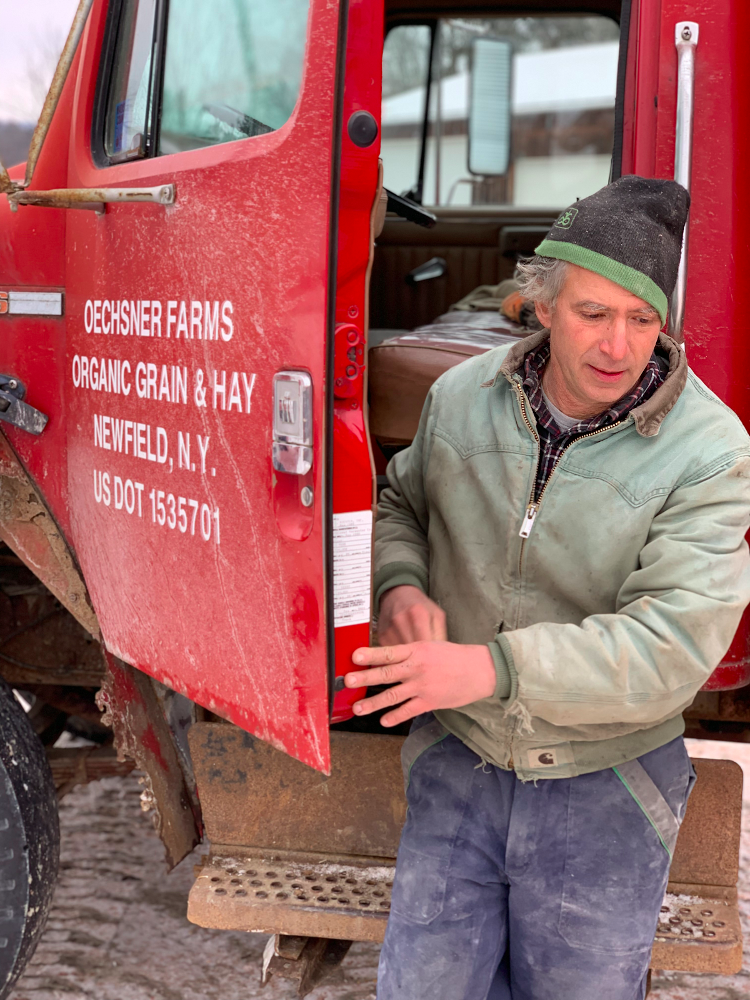
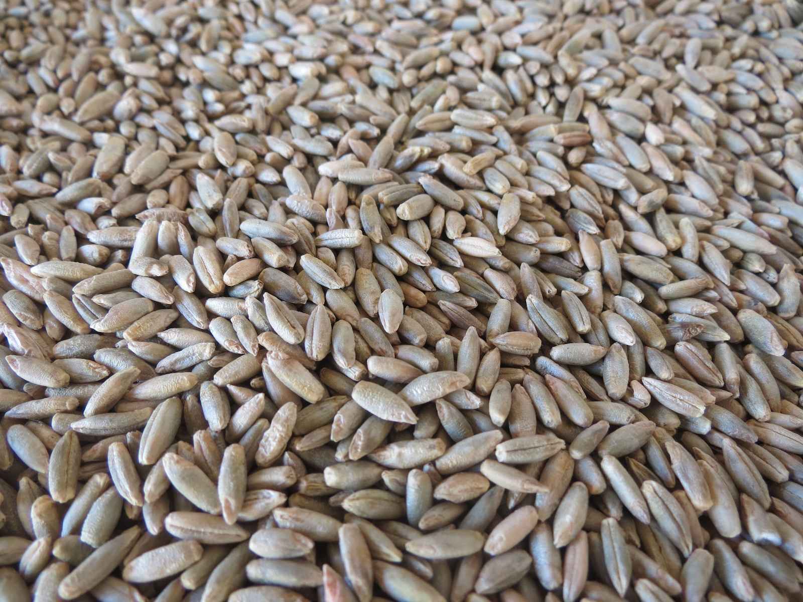
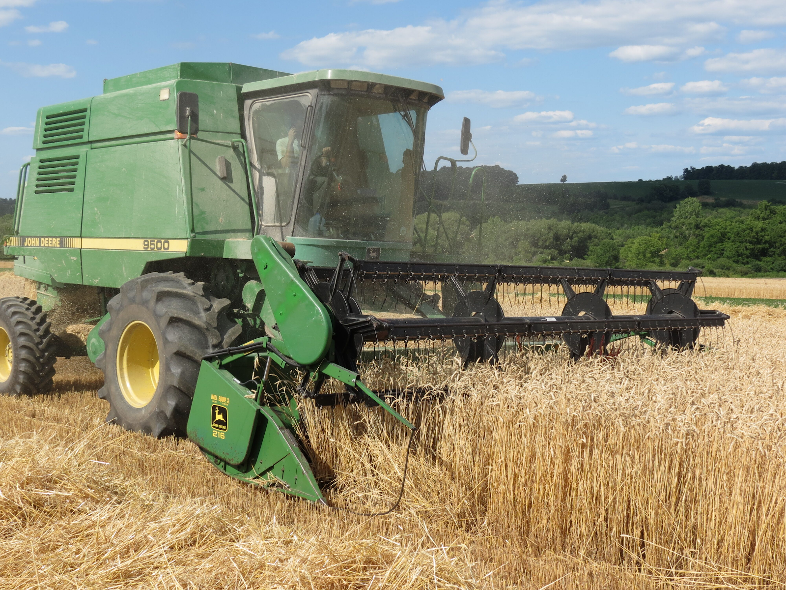

How It's Made
Grain
Whiskey is defined as any spirit distilled from grain.
Traditionally, the grains used to make whiskey were those that were well adapted to the region. This is why Scotch uses barley - well suited to the wet, mild north Atlantic. Settlers in Kentucky grew corn, a native crop introduced to them by the indigenous people, that thrived in fertile soils and hot, wet climate west of the Appalachian Mountains. As a way to monetize their crop and prevent spoilage, they distilled surplus corn into whiskey, put in barrels and shipped it down the Ohio and Mississippi Rivers where it turned golden and more delicious the longer it traveled.
Rye grain, bred to be hardy enough to withstand cold weather and challenging soils, was the grain of choice for New England whiskey makers - one of the reasons the most classic cocktails popularized in New York City call for rye - it was the local whiskey. Unlike corn, which extracts nutrients from the soil, rye actually replenishes it by adding carbon and prevents erosion when planted as a cover crop.
 When distilled into whiskey, different grains impart distinctive flavors. Rye tends to be spicy and dry compared to corn, which gives bourbon its characteristic sweetness. Barley lends a nutty flavor can give whiskey an almost creamy sensation. Split Spirits uses local grains adapted to each place to create a foundation for each spirit. When paired with wood from the same place, the result a spirit that reflects flavors unique to a region.
